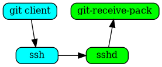
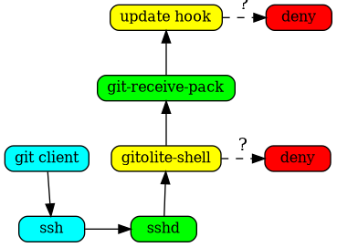

gitolite overview
Gitolite allows you to setup git hosting on a central server, with fine-grained access control and many more powerful features.
what is gitolite?
Gitolite is an access control layer on top of git. Here are the features that most people see:
- Use a single unix user ("real" user) on the server.
- Provide access to many gitolite users:
- they are not "real" users,
- so they do not get shell access.
- Control access to many git repositories:
- read access controlled at the repo level,
- write access controlled at the branch/tag/file/directory level, including who can rewind, create, and delete branches/tags.
- Can be installed without root access, assuming git and perl are already installed.
- Authentication is most commonly done using sshd, but you can also use "smart http" mode if you prefer (this may require root access for the initial setup).
why might you need it?
access control
Git by itself does not do any access control -- it relies on the transport medium to do authentication ("who are you?"), and on OS file permissions to do authorisation ("what are you allowed to do?").
Git also comes with a program called "git-shell" which can act as a restricted login shell if you don't want users getting a proper shell. Using this and judicious use of Unix groups, you can allow some people read-only access while others get read-write access, etc. This is probably sufficient if your needs are simple and don't change too often.
However, gitolite does this much better, and offers many more features.
basic use case
Gitolite is useful in any server that is going to host multiple git repositories, each with many developers, where "anyone can do anything to any repo" is not a good idea. Here're two examples to illustrate.
This first example has 3 repos and 3 developers with different levels of access to each repo. It's a very simple, readable, syntax, and makes it easy to answer questions like "what repos can bob push to" (answer: only 'bar').
repo foo RW+ = alice RW = carol repo bar RW+ = bob R = alice repo baz RW+ = carol R = alice bob
This second example allows different levels of access to different branches and tags for different developers:
repo foo RW+ = alice RW master = bob RW+ dev/ = bob RW refs/heads/tags/v[0-9] = ashok
other features
Gitolite has many more features, as you might guess from the amount of documentation (see links in the nav bar at the top). Here's a quick sample:
- Very powerful rule language (rules most often based on branch/tag name, or files/directories touched, but many other factors can be used, such as size of changed files, number of changed files, etc.).
- Convenience features for writing the rules (repo groups, user groups, get user group info from LDAP, include files, macros...)
- Highly customisable and scriptable, especially custom commands for users. Many built-in commands and options.
- Powerful and flexible mirroring system.
- Users can create their own repos and set access rights (if you allow them).
alternatives to gitolite
unix permissions and ACLs
If you're a masochist, you could probably do example 1 with Unix permissions and facls. But you can't do example 2 -- git is not designed to allow that!
Here are some other disadvantages of the Unix ACL method:
- Every user needs a userid and password on the server.
- Changing access rights involves complex
usermod -G ...mumblings (I.e., the "pain" mentioned above is not a one-time pain!) - Viewing the current set of permissions requires running multiple commands to list directories and their permissions/ownerships, users and their group memberships, and then correlating all these manually.
- Auditing historical permissions or permission changes is impossible.
Gerrit Code Review
The best real alternative to gitolite is Gerrit Code Review. If code review is an essential part of your workflow, you should use Gerrit.
Here're some high level differences between gitolite and Gerrit (as of about mid-2012 or so):
Size: 3000+ lines of perl versus of 56,000+ lines of Java
Architecture: Gitolite sits on top of "standard" git and openssh, which are assumed to already be installed. Gerrit includes its own git stack (jgit) and sshd (Apache Mina). In Java tradition, they all come bundled together.
(Corollary: As far as I know jgit does not support the same hooks that 'man githooks' talks about).
Gitolite uses a plain text config file; gerrit uses a database.
User view: Gitolite is invisible to users except when access is denied. Gerrit is much more visible to devs because of its role in enforcing code review, approvals, and workflow.
On a related note, gitolite does not do anything special with signed or annotated tags, nor does it check author/committer identity. However, it is trivial to add your own code to do either (or if someone contributes it, to just "enable" what ships with gitolite in a disabled state).
gitlab, gogs, gitblit, and others
There are several alternatives which offer a full web-based GUI, for administrators or users or both. They also offer a lot of enterprise features (for example LDAP integration), and social coding features (issue trackers, discussions, comments on code, pull requests, etc.)
However, they are unlikely to be as customisable as gitolite is, if you care about that sort of thing.
how does it work?
At a very high level, gitolite relies on sshd (or httpd if you're using the smart http mode) to authenticate the user and supply the username. Based on this, and the command given, it decides whether to allow or deny the request.
Consider a push command in ssh mode. Normally (i.e., without gitolite) this
would invoke git-receive-pack on the server, and the flow would be somewhat
like this (left side is client, right side is server):

When you install gitolite and setup the user, gitolite sets up ssh to
force the gitolite-shell command to run first, instead of the command
requested:
The gitolite-shell program uses the username supplied by ssh, and the repo
name in the command, to decide if the user has write access to the repo or
not.
If he does have some write access, git-receive-pack is called, but that's not the end of the story. The branch/tag/file(s) he is pushing also need to be checked, and gitolite sets up the update hook on the repo to do that.

A more detailed explanation, with figures, is here.
who uses it?
If you're using gitolite and find it very useful in some way, I would love to describe your use of it or add a link to your own description of it here. Of course, you can anonymise it as much as you need to.
The Fedora Project controls access to over 10,000 package management repositories accessed by over 1,000 package maintainers using gitolite. This is probably the largest confirmed gitolite installation anywhere. The whole "big-config" option back in v2 (in v3 this is the default!) was initially done for them (their config file was so big that without the big-config changes gitolite would just run out of memory and die!).
The KDE project uses gitolite (in combination with redmine for issue tracking and reviewboard for code review). Apart from the usual access control, the KDE folks are heavy users of the "ad hoc repo creation" features enabled by wildrepos and the accompanying commands. Several of the changes to the "admin defined commands" were also inspired by KDE's needs. See section 5 and section 6 of the above linked page for details.
Prof. Hiren Patel of the University of Waterloo is responsible for the existence of the fairly popular "wildrepos" feature. The documentation was pretty much written with his use case in mind, but of course it turns out to be useful for a lot of people, as you can see from the previous para on KDE's use of gitolite.
In fact, he surprised the heck out of me once by saying that if it hadn't been for this feature, he might not have used git itself -- which is a pretty serious compliment if you think about the magnitude of the git project and my little one-man show!
He explains his use of it here.
Gentoo Linux has just moved their git repositories from gitosis to gitolite. There are about 200 repositories, some of them are the so called overlays, official and unofficial/user overlays, plus several developer and project repositories, used by more than 1000 people. That number will be increased in the near future, as they are going to migrate some of their CVS/SVN repositories there, plus they are offering overlays hosting for users as well.
kernel.org, the official distribution point for the Linux kernel, is the latest (as of 2011-10) high-visibility installation. According to this email to the lkml, kernel.org decided to use gitolite for access controlling their git repos. Their FAQ entry describes at a high level why they chose gitolite.
This move also prompted the first ever security audit of gitolite by an outside party. Gitolite did great; see here for details. [NOTE: v3 has not had such an audit yet; if you did one, please let me know what you found. If you want to do one and need clarifications on anything or general background let me know].
In addition, kernel.org was responsible for a serious rethink of a few rough edges in gitolite, and smoothing them out was fun (the "playing with gitolite" stuff, making the test suite simpler, "deny" rules for the entire repo).
The Mageia Project is using gitolite 3 to manage its git repositories and access control. The repositories are defined in yaml files. A tool called mgagit has been created and is repsonsible for the generation of the gitolite configuration from the yaml repos definitions, and the extraction of users' ssh keys from an ldap directory into the gitolite configuration.
Gitolite and mgagit are installed using rpm packages and a puppet module.
A general note: if you see the list of high-profile users above, you will see that gitolite benefits as much as they do; possibly more.
Note:
GIT is a trademark of Software Freedom Conservancy and my use of "Gitolite" is under license.